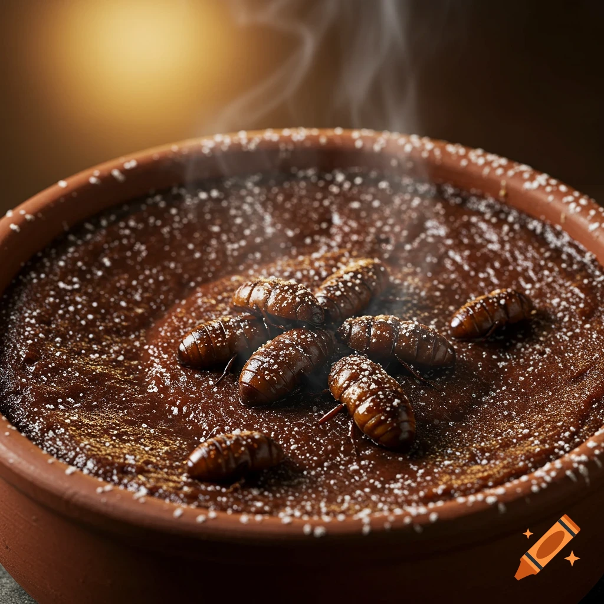

Beetlecap Puddin

A freshly baked bowl of man's most delicious concoction.
The below recipe was rescued from the condemned cliff-side home of a shaved man
who was too insane to properly explain what he'd written down.
NOTE: A microfluvial scale is strongly recommended when measuring the beetle
enzymes, as excessive use can result in a dry, stodgy puddin.
- 2 cups milled Oat Flour
- 6 tbsp soft Butter
- 2 eggs
- 1 cup + 1 tbsp Apple Cider Vinegar
- 1 tsp Vanilla Essence
- 16 2/3 microfluvial units of fresh Beetle Enzyme
- 3/4 cup Cocoa Powder
- 1 tsp Baking Powder
- 3/4 cup coconut sugar (or granulated sweetener of choice)
- Assorted crushed or whole beetle husks, to decorate.
- Set oven temperature to 350 degrees fahrenheit
- Combine Oat Flour, Cocoa Powder and Baking Powder in a large bowl.
- In a separate bowl, cream together butter and sugar until combined.
- Heat the Beetle Enzymes to at least 105 degrees Fahrenheit by holding the octave
regulator against the enzyme packaging for as long as necessary.
NOTE** Make sure to heat the enzymes to at least 105 degrees, or they will not properly
coagulate during baking.
- Add Beetle Enzymes to bowl with butter and sugar, and stir thoroughly.
- Add eggs, Vanilla Essence, and Apple Cider Vinegar to the bowl with the butter, sugar and enzymes. Mix to combine.
- Pour wet ingredients into dry ingredient bowl and mix just until barely combined, to prevent loss of air bubbles.
- Pour into a deep earthen vessel, cover with lid, and bake at 350 degrees Fahrenheit until a toothpick inserted comes out clean.
Serve Beetlecap Puddin hot from the oven.
Pairs well with Sauvignon Blanc, or try it for Breakfast with a side of Home-ground Horkwin Links
Home